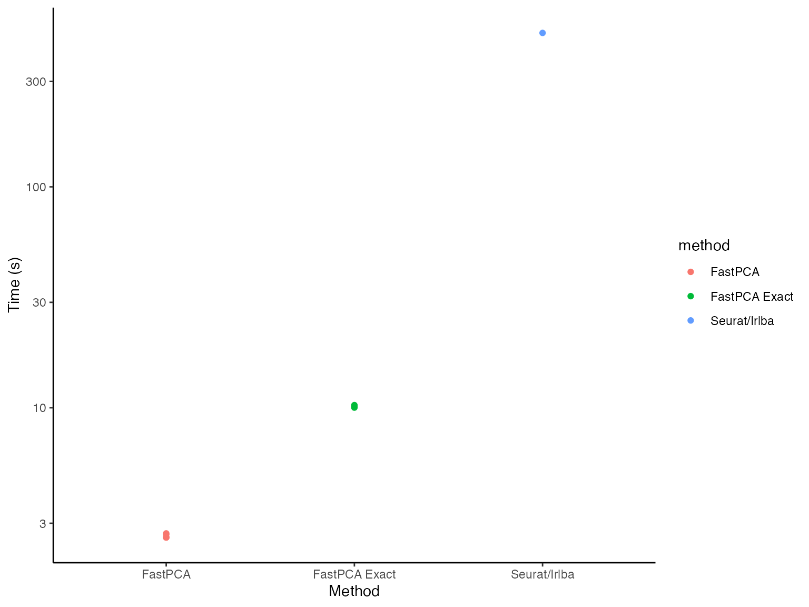

FastPCA with Single Cell Spatial Transcriptomics
Source:vignettes/SpatialTranscriptomics.Rmd
SpatialTranscriptomics.Rmd
library(FastPCA)
#> Thank you for using FastPCA!
#> To cite this package, run: citation('FastPCA')
library(magrittr)Current Landscape of Biological Data Analysis
Data used for studying diseases is increasing at a fast pace. We used to profile ~30,000 genes across 20 samples, then ~30,000 genes across 1,000 samples, now we can profile 18k genes across millions of cells using Bruker (Nanostring) CosMx SMI. We can also image samples in high dimensions with mass spec to get lipid and metabolite profiles from 5x5 um bins in a whole tissue section with ~10,000 unique peaks. Who knows what the future will hold in terms of data dimensionality, but we need to be able to maintain as much information from the whole data as possible while also making it manageable to analyze. This is where dimension reductions like PCA play a big role.
Currently, with how large data has gotten, the widely accepted way to
do this is to identify those features (genes, peaks, etc) that have the
largest variation between samples (cells, bins, pixels, etc), then use
only those to calculate the embedding. But can imagine that there is
information in those other features that are then being lost. The great
irlba package and method performs this dimension reduction
accurately but does take time and the R package doesn’t offer
multithreading which means it can take a very long time depending on how
many dimensions are being extracted and the number of samples which are
included.
This got me thinking “Is there another way to identify these top
dimensions that can be meaningfully multithreaded and produce results
that are almost as accurate for the sake of clustering samples?”. The
field of machine learning has long depended on matrix multiplication to
perform operations on large feature-space, leading to the logical path
of using their optimized code-bases to do the matrix operations on our
high dimensional biological data. FastPCA originally was
started because of my experience with pytorch. Dr. Rafael S. de Souza
created a package qrpca is
a similar thought to FastPCA, though using Rs torch
impementation. However, qrpca doesn’t seem to produce
reduced-spaced singular value decomposition like FastPCA
does with randomized SVD.
Because my experience with pytorch, I wanted to do this
with python through reticulate rather than with Rs
torch (which actually ended up providing more benefits in
terms of speed, but does require careful usage because of system-level
conflicts). Due to CRANs checks, the defaults in the package are
using base R and irlba, but parameter selection can change
the backends.
Here, we will walk through how to use FastPCA with the
pytorch backend, and discuss how this meaningfully differs
from both irlba and Dr. Rafael’s qrpca.
Prepping Conda Environment
Within FastPCA, I’ve included a function called
setup_py_env() which makes the creation of the python
environment with reticulate easy to do. The recommended
method is 'conda' since that’s what I have had the most
experience with and it allows for installing CUDA dependencies as I
demonstrated here.
If wanting to use CUDA, I’d suggest creating the environment from
scratch to ensure that the pytorch install can see the CUDA device as
shown in the repo. Otherwise, it’s rather straightforward and can be ran
by calling:
setup_py_env(method = "conda")Starting the Environment
Once the environment is created, then it can be started. **If using
RStudio, I recommend restarting the session again just to be sure that
there isn’t anything that would cause conflicts. Again, inside of
FastPCA I included a function to start the environment:
start_FastPCA_env(). If the defaults were used when setting
up the environment, the defaults can be used when starting the
environment as well.
Just as a sanity check to make sure that the python packages are
available, I typically check with reticulate. When using
packages like Seurat or torch,
reticulate sometimes loses track of where packages are even
though it can see the correct python version within the environment and
the config paths are all correct. Not sure how this can be fixed without
basically writing my own R-python handler that builds function calls and
then launches them on the terminal before reading it back to R, so be
mindful that certain orders can cause crashes and errors and that they
aren’t FastPCA’s fault but rather something deeper in the
software. One example is reticulate won’t be able to load
pytorch if R’s torch has already been used
somewhere in the same session.
Here we can see the config is correctly pointing to the conda
environment for FastCPA.
reticulate::py_config()
#> python: /opt/anaconda3/envs/FastPCA/bin/python
#> libpython: /opt/anaconda3/envs/FastPCA/lib/libpython3.10.dylib
#> pythonhome: /opt/anaconda3/envs/FastPCA:/opt/anaconda3/envs/FastPCA
#> version: 3.10.18 | packaged by conda-forge | (main, Jun 4 2025, 14:46:00) [Clang 18.1.8 ]
#> numpy: /opt/anaconda3/envs/FastPCA/lib/python3.10/site-packages/numpy
#> numpy_version: 2.2.6
#>
#> NOTE: Python version was forced by use_python(, required = FALSE)And here, can see that the package for pytorch is
available in the current environment.
reticulate::py_module_available("torch")
#> [1] TRUEIf this returns FALSE, likely either
start_FastPCA_env() hasn’t been ran or, if the config
prints everything write but still get FALSE from this, then
likely need to restart the environment for reasons beyond my
knowledge.
Spatial Transcriptomic Data
Previously, we performed single-cell spatial transcriptomics using
Nanostring (now Bruker) CosMx SMI to identify changes to the tumor
microenvironment and specific cell types associated with whether the
tumors had been exposed to immunotherapy or not (Soupir et al. (2024)). This is a large study in
terms of uniquely profiled tissues (tumor and stroma from ~20 patients)
and number of cells (~200,000) while the number of genes was small
(~1000). As mentioned at the beginning, there are now panels that are
18,000+ genes and can be applied across whole tissues resulting in
millions of cells. Because the focus of this vignette is on the
performance of the PCA, we are going to compare FastPCA to
Seurat’s. For larger feature-space and sample count,
Seurat will either:
- identify the most variables features, select them from the data and perform PCA on those, or
- create a ‘sketch’? of the high sample count (essentially down sample to a smaller number of samples), identify most variable features, select those features and perform PCA on the smaller sample x feature matrix, then use the model from the smaller data set to project the full data in lower dimension
Both of these remove information from the data when performing
dimension reduction. One benefit is that it is more memory friendly.
However, those that should be helping in the analysis of this type of
data should have access to work stations and high performance computing
resources, both of which aren’t (shouldn’t be?) low memory systems. Even
with the Seurat object from this study, when imported into
R it’s 2.2GB in size. The data get’s large quickly (and this is with
sparse matrices). The libraries Seurat and
SeuratObject can be installed:
#Seurat
if (!require("Seurat", quietly = TRUE))
install.packages("Seurat")
#>
#> Attaching package: 'SeuratObject'
#> The following objects are masked from 'package:base':
#>
#> intersect, t
#SeuratObject
if (!require("SeuratObject", quietly = TRUE))
install.packages("SeuratObject")The dataset is publicly available on Zenodo and can be downloaded locally to be used. I have saved mine to my lab folder. Here, it’s read into the environment and then we can start working with it.
seurat_obj = readRDS("/Volumes/lab_soupir/spatial_transcriptomics/example_data/seurat_object.Rds")Alternatively, it may be downloaded and loaded directly into R with:
options(timeout = 300)
seurat_obj = readRDS(url("https://zenodo.org/records/12730227/files/seurat_object.Rds?download=1"))##Prepping the Expression Matrix
The results here will look different than from the above mentioned
manuscript because we are going to process differently (not
SCTransform). Will perform the normalization (not scaling) outside of
the FastPCA package but will use prep_matrix()
to transform and scale the data. The prep_matrix() function
will perform log2 transformation but sometimes log1p() is
used instead.
The raw count data is in the object at
seurat_obj@assays$Nanostring@counts and in sparse format.
How Seurat performs normalization is with a scaling factor
to bring expression in line between samples after finding the proportion
of total counts each gene contributes. This is then used with the
log1p() function mentioned.
scale.factor = 10000
count_mat = as.matrix(seurat_obj@assays$Nanostring@counts)
#> Warning in asMethod(object): sparse->dense coercion: allocating vector of size
#> 1.5 GiB
count_mat_norm = t(log1p((t(count_mat) / colSums(count_mat)) * scale.factor))One large advantage of using FastPCA with they
python environment is the ability to change the number of CPU cores on
the fly, which the rtorch backend does not support once
it’s used (will see libtorch warning messages printed out
in the terminal). Since our data is columns as samples and rows
as features, it needs to be transformed to have samples as rows and
features as columns. Further, for singular vector decomposition the
values should be mean centered (mean of 0) and unit variance (variance
of 1) scaled. To do this, we can run:
prepped_mat = prep_matrix(mat = count_mat_norm,
log2 = FALSE,
transpose = TRUE,
scale = TRUE,
backend = "pytorch",
cores = 2,
device = "CPU")Running FastPCA()
Next is actually running the singular value decomposition with
FastPCA(). Depending on the backend, there are different
parameters that can be passed. The default backend is 'r'
or 'irlba' which all of the extra parameters with
... are passed to. The important parameters are
k for the number of dimensions to return, p
for the number of extra dimensions to use to more accurately capture
information in the k dimensions, and q_iter
for the number of power iterations. The best way to increase
accuracy in the tail end dimensions is to increase p rather
than inceasing q_iter. The oversampling
p will increase memory because it increases the size of the
matrix but if the variance doesn’t differ much in the higher dimensions,
it has limited benefit. The q_iter parameter will increase
accuracy of the top dimensions, which are typically fairly accurately
estimated anyway.
fastpca_runs = bench::mark(
suppressMessages(
FastPCA(input_r_matrix = prepped_mat,
k = 100,
p = 10,
q_iter = 2,
exact = FALSE,
backend = "pytorch",
cores = 1)
),
min_time = 5,
min_iterations = 5
)We can look at the time that it took to calculate the dimensions here:
summary(fastpca_runs$time[[1]])
#> Min. 1st Qu. Median Mean 3rd Qu. Max.
#> 2.618 2.630 2.631 2.643 2.666 2.670We will look at the results in the end when we have also run
irlba::irlba to compare.
Running with Seurat
The original export from the machine produced a Seurat
object that was a V4 object. We can create a V5 object from the count
matrix and meta data since we don’t care about the spatial information
for now.
seurat_obj2 = Seurat::CreateSeuratObject(counts = count_mat,
meta.data = seurat_obj@meta.data)
#> Warning: Data is of class matrix. Coercing to dgCMatrix.The Seurat::RunPCA() function requires data to be
normalized and scaled. Seurat makes this pretty straight
forward. Since we will use all genes present (actually 959 genes for
this data), will pass in all of the features to the
Seurat::NormalizeData() and
Seurat::ScaleData() functions.
seurat_obj2 = Seurat::NormalizeData(seurat_obj2,
features = rownames(seurat_obj2))
#> Normalizing layer: counts
#> Warning: The following arguments are not used: features
seurat_obj2 = Seurat::ScaleData(seurat_obj2,
features = rownames(seurat_obj2))
#> Centering and scaling data matrixSince Seurat uses irlba as well behind the
scenes, to match the same dimension search that we used with
FastPCA we
seurat_run = bench::mark(
suppressMessages(
Seurat::RunPCA(seurat_obj2,
reduction.name = "pca",
npcs = 100,
work = 110,
features = rownames(seurat_obj2))
),
min_time = 1,
min_iterations = 1
)
#> Warning: Some expressions had a GC in every iteration; so filtering is
#> disabled.Again, lets look at the time:
summary(seurat_run$time[[1]])
#> Min. 1st Qu. Median Mean 3rd Qu. Max.
#> 518.3 518.3 518.3 518.3 518.3 518.3Comparing FastPCA to IRLBA
FastPCA and irlba return the left and right
singular vectors as well as the diagonal singular values, but
Seurat returns stdev which from looking at
their Seurat:::RunPCA.default() is the singular values
divided by the square root of the number of samples just like:
We can visualize these together with some ggplot2
code.
library(ggplot2)
seurat_stdev = data.frame(
stdev = seurat_run$result[[1]]@reductions$pca@stdev
) %>%
dplyr::mutate(dim = 1:dplyr::n(),
method = "SeuratIrlba")
fastpca_stdev = data.frame(
stdev = fastpca_stdev_vec
) %>%
dplyr::mutate(dim = 1:dplyr::n(),
method = "FastPCA")
plot_dat = dplyr::bind_rows(
seurat_stdev,
fastpca_stdev
)
#generate plot
plot_dat %>%
dplyr::filter(dim %in% 1:20) %>%
ggplot() +
geom_point(aes(x = dim, y = stdev, color = method)) +
theme_classic()
We can see that in the dimension up to ~10, they are almost
identical. When they flatten out (little difference in the variance
explained between PCs) it’s more difficult for FastPCA. However, let’s
look at the variance that those dimensions explain. This can be done by
squaring the singular values then dividing them by the variance of the
full prepped matrix prepped_mat:
#signif(fastpca_out$S^2 / sum(prepped_mat^2)*100, digits = 4)
plot_dat = plot_dat %>%
dplyr::mutate(S = stdev * sqrt(nrow(prepped_mat)),
var_explained = S^2 / sum(prepped_mat^2) * 100)
plot_dat %>%
dplyr::filter(method == "FastPCA") %>%
head(n = 15)
#> stdev dim method S var_explained
#> 1 5.595580 1 FastPCA 2496.8578 3.2015002
#> 2 3.860739 2 FastPCA 1722.7377 1.5240676
#> 3 3.397660 3 FastPCA 1516.1028 1.1803837
#> 4 2.784523 4 FastPCA 1242.5090 0.7928025
#> 5 2.417505 5 FastPCA 1078.7385 0.5975830
#> 6 2.098642 6 FastPCA 936.4556 0.4503397
#> 7 2.013304 7 FastPCA 898.3759 0.4144595
#> 8 1.947149 8 FastPCA 868.8562 0.3876696
#> 9 1.814438 9 FastPCA 809.6378 0.3366258
#> 10 1.649567 10 FastPCA 736.0694 0.2782297
#> 11 1.562700 11 FastPCA 697.3076 0.2496978
#> 12 1.525018 12 FastPCA 680.4929 0.2378007
#> 13 1.500120 13 FastPCA 669.3829 0.2300992
#> 14 1.403497 14 FastPCA 626.2678 0.2014123
#> 15 1.376403 15 FastPCA 614.1783 0.1937112View same for Seurat/irlba:
plot_dat %>%
dplyr::filter(method == "SeuratIrlba") %>%
head(n = 15)
#> stdev dim method S var_explained
#> 1 5.595807 1 SeuratIrlba 2496.9590 3.2017596
#> 2 3.860760 2 SeuratIrlba 1722.7473 1.5240844
#> 3 3.397714 3 SeuratIrlba 1516.1266 1.1804208
#> 4 2.784830 4 SeuratIrlba 1242.6461 0.7929775
#> 5 2.418789 5 SeuratIrlba 1079.3112 0.5982177
#> 6 2.101672 6 SeuratIrlba 937.8074 0.4516408
#> 7 2.017853 7 SeuratIrlba 900.4055 0.4163343
#> 8 1.953772 8 SeuratIrlba 871.8115 0.3903112
#> 9 1.825876 9 SeuratIrlba 814.7418 0.3408834
#> 10 1.674047 10 SeuratIrlba 746.9928 0.2865488
#> 11 1.589484 11 SeuratIrlba 709.2592 0.2583306
#> 12 1.556328 12 SeuratIrlba 694.4643 0.2476657
#> 13 1.541150 13 SeuratIrlba 687.6916 0.2428585
#> 14 1.449866 14 SeuratIrlba 646.9587 0.2149409
#> 15 1.438523 15 SeuratIrlba 641.8974 0.2115910Here we see that the just how little variance is explained by these
slightly higher dimensions, keeping in mind that there are at
most 978 dimensions before we get back to the full matrix. Speaking
of, lets quickly run the exact SVD using FastPCA.
fastpca_runs_exact = bench::mark(
suppressMessages(
FastPCA(input_r_matrix = prepped_mat,
k = 100,
p = 10,
q_iter = 2,
exact = TRUE,
backend = "pytorch",
cores = 1)
),
min_time = 5,
min_iterations = 5
)Even with the full SVD (left) matrix, it still ran:
summary(fastpca_runs_exact$time[[1]])
#> Min. 1st Qu. Median Mean 3rd Qu. Max.
#> 10.17 10.18 10.19 10.23 10.21 10.39Can now add these exact values to the plotting data and see how they
compare, still taking FAR less time than
Seurat/irlba.
plot_dat_all = plot_dat %>%
dplyr::bind_rows(data.frame(method = "FastPCA Exact",
S = fastpca_runs_exact$result[[1]]$S) %>%
dplyr::mutate(stdev = S / sqrt(nrow(prepped_mat)),
var_explained = S^2 / sum(prepped_mat^2) * 100,
dim = 1:dplyr::n()))
plot_dat_all %>%
dplyr::filter(dim %in% 1:20) %>%
ggplot() +
geom_point(aes(x = dim, y = stdev, color = method), alpha = 0.2) +
theme_classic()
Lastly, lets look at the time it took to run each of these:
time_dat = data.frame(time = c(fastpca_runs$time[[1]],
fastpca_runs_exact$time[[1]],
seurat_run$time[[1]]),
method = c(rep("FastPCA", fastpca_runs$n_itr[[1]]),
rep("FastPCA Exact", fastpca_runs_exact$n_itr[[1]]),
rep("Seurat/Irlba", seurat_run$n_itr[[1]])))
time_dat %>%
ggplot() +
geom_point(aes(x = method, y = time, color = method)) +
labs(x = "Method", y = "Time (s)") +
theme_classic() +
scale_y_log10()
Even on a log scale(!), FastPCA looks significantly
faster (because it is).